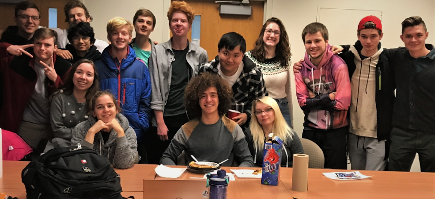

TEACHING & MENTORSHIP
Building confidence, curiosity, and community.
I believe teaching goes beyond explaining scientific concepts. It is about helping students build confidence, think independently, and feel that they belong in science.
Teaching experience
At the University of Cincinnati, I served as a peer leader, supplemental instructor, recitation teaching assistant, and tutor in physics and mathematics. I also taught a professional-development course for first-year physics and astrophysics students, emphasizing academic success, personal growth, and engagement with the university community.
At the University of Virginia, I taught observational astronomy laboratories, helping students connect physical concepts with astronomical observations and data analysis. I also mentored undergraduate researchers in scientific reasoning, computational tools, and collaborative research practices.

Mentorship & community
Beyond formal instruction, I have worked to build supportive academic communities. At Cincinnati, I re-established the Society of Physics Students and served as president of the College of Arts & Sciences Ambassadors, helping students connect with peers and explore opportunities in science.
At Virginia, I organized Astro-Grad-Lunch for three years, bringing graduate students together to share practical knowledge about scientific computing, GitHub, high-performance computing, fellowships, and academic careers.
Read about my student involvement at Cincinnati ↗
My approach
I emphasize active learning, physical intuition, and collaborative problem-solving, recognizing that students bring different experiences and perspectives to the classroom. I encourage questions, welcome mistakes as part of learning, and aim to make difficult ideas approachable. Above all, I hope students leave with the curiosity and confidence to tackle unfamiliar challenges independently.